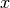

Binning
This page explains the mathematics behind the binning functionality found in
bins. The binning functions are purely mathematical in nature though
they do have application in other parts of pyne that deal more directly physics
with physics.
Pointwise Linear Collapse
The pointwise_linear_collapse() function takes an array of pointwise
data that has the independent variable  and collapses this into
groups as defined by the bin boundaries where
indexes . Both and must be monotonic and in the
same direction. Say that there are  points in and .
Let
points in and .
Let  index . Then for all points internal to a group, the
collapsed value is:
index . Then for all points internal to a group, the
collapsed value is:
System Message: WARNING/2 (y_g = \frac{1}{x_{g+1} - x_g} \Sum_{n|x_g \le x_n}^{x_n \le x_{g+1}}
\frac{y_{n+1} + y_n}{2} * (x_{n+1} - x_n))
latex exited with error:
[stderr]
[stdout]
This is pdfTeX, Version 3.1415926-2.5-1.40.14 (TeX Live 2013/Debian)
restricted \write18 enabled.
entering extended mode
(./math.tex
LaTeX2e <2011/06/27>
Babel <3.9f> and hyphenation patterns for 78 languages loaded.
(/usr/share/texlive/texmf-dist/tex/latex/base/article.cls
Document Class: article 2007/10/19 v1.4h Standard LaTeX document class
(/usr/share/texlive/texmf-dist/tex/latex/base/size12.clo))
(/usr/share/texlive/texmf-dist/tex/latex/base/inputenc.sty
(/usr/share/texlive/texmf-dist/tex/latex/ucs/utf8x.def))
(/usr/share/texlive/texmf-dist/tex/latex/ucs/ucs.sty
(/usr/share/texlive/texmf-dist/tex/latex/ucs/data/uni-global.def))
(/usr/share/texlive/texmf-dist/tex/latex/amsmath/amsmath.sty
For additional information on amsmath, use the `?’ option.
(/usr/share/texlive/texmf-dist/tex/latex/amsmath/amstext.sty
(/usr/share/texlive/texmf-dist/tex/latex/amsmath/amsgen.sty))
(/usr/share/texlive/texmf-dist/tex/latex/amsmath/amsbsy.sty)
(/usr/share/texlive/texmf-dist/tex/latex/amsmath/amsopn.sty))
(/usr/share/texlive/texmf-dist/tex/latex/amscls/amsthm.sty)
(/usr/share/texlive/texmf-dist/tex/latex/amsfonts/amssymb.sty
(/usr/share/texlive/texmf-dist/tex/latex/amsfonts/amsfonts.sty))
(/usr/share/texlive/texmf-dist/tex/latex/tools/bm.sty)
No file math.aux.
(/usr/share/texlive/texmf-dist/tex/latex/ucs/ucsencs.def)
(/usr/share/texlive/texmf-dist/tex/latex/amsfonts/umsa.fd)
(/usr/share/texlive/texmf-dist/tex/latex/amsfonts/umsb.fd)
! Undefined control sequence.
<argument> ...y_g = \frac {1}{x_{g+1} - x_g} \Sum
_{n|x_g \le x_n}^{x_n \le ...
l.15 \end{gather}
! Undefined control sequence.
<argument> ...y_g = \frac {1}{x_{g+1} - x_g} \Sum
_{n|x_g \le x_n}^{x_n \le ...
l.15 \end{gather}
[1] (./math.aux) )
(see the transcript file for additional information)
Output written on math.dvi (1 page, 820 bytes).
Transcript written on math.log.
The term is the center (average) value of a linear
interpolation between the two points. Therefore, is the
-weighted average of over the entire group.
In the event that the line between and crosses
either the lower or upper bin boundary (or both) then their values are
adjusted via a linear interpolation to the value at the bin boundary.
For a lower boundary crossing, the following substitutions are made to the
equation above:
For an upper boundary crossing: